µEforth on the pico-ice
═══════════════════════
December 16, 2023
🎁 🧊 🎁
On Forth Day 2023
Christopher Lozinski
🧊 generously gifted 🧊
me a pico-ice!
🎁 🧊 🎁
pico-ice
════════
• Raspberry Pi Pico (RP2040) + iCE40UP5K FPGA
• 4MB SPI Flash for CPU
• 4MB SPI Flash for FPGA
• 8MB low power qSPI RAM
• Shared RGB LED
• All RP2040 + iCE40 pins exposed
• 2 pushbuttons (one mostly for reset)
• FPGA clock controlled by RP2040
• RP2040 can feed configuration to FPGA!
RP2040
══════
• 133 MHz dual ARM Cortex-M0+
• 264K SRAM
• 30 GPIO pins (4 can be analog)
• 2 UARTs
• 2 SPI controllers
• 2 I²C controllers
• 16 PWM channels
• USB 1.1 controller and PHY,
with host and device support
• 8 programmed input–output (PIO)
state machines
• Boots over SPI or USB
PIO
═══
• 2 x Versatile programmable I/O blocks
- 4 Shift registers + state machines each
• Hardware can handle:
- 8080 and 6800 parallel bus
- I2C, 3-pin I2S
- SDIO
- SPI, DSPI, QSPI
- UART
- DVI or VGA (via resistor DAC)
@pio_layout.png
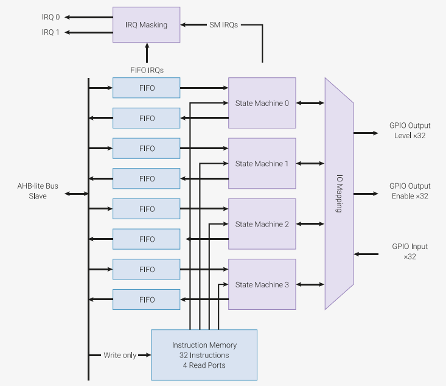
PIO Model
═════════
• Two 32-bit shift registers – either direction, any shift count
• Two 32-bit scratch registers
• 4×32-bit bus FIFO in each direction (TX/RX),
reconfigurable as 8×32 in a single direction
• Fractional clock divider (16 integer, 8 fractional bits)
• Flexible GPIO mapping (all 30 pins)
• DMA interface, sustained throughput
up to 1 word per clock from system DMA
• IRQ flag set/clear/status
@pio_model.png
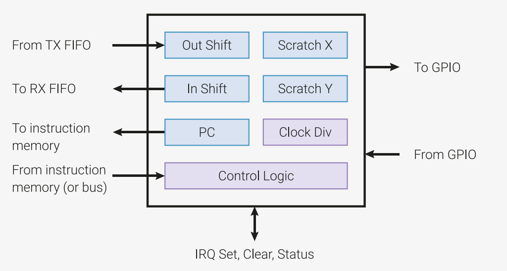
@pio_square.png
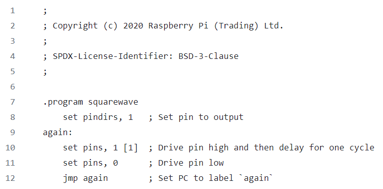
@pio_instr.png
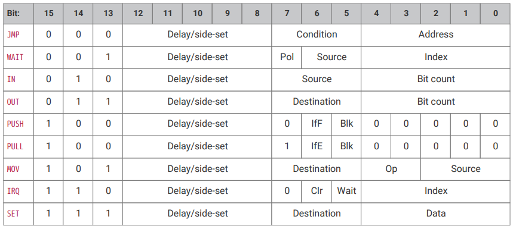
iCE40UP5K
═════════
• 5280 LUTs
• 1Mbit single port RAM
• 120Kb dual port RAM
• 8 x DSP blocks
@ice40-top.png
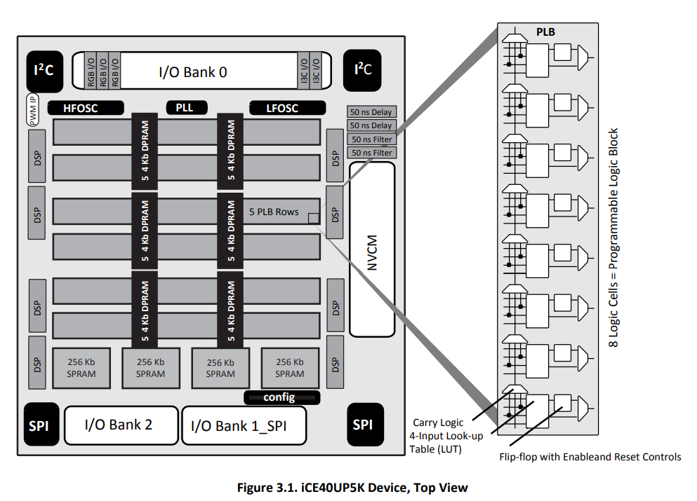
sysDSP
══════
• 8-bit x 8-bit Multiplier
• 16-bit x 16-bit Multiplier
• 16-bit Adder/Subtracter
• 32-bit Adder/Subtracter
• 16-bit Accumulator
• 32-bit Accumulator
• 8-bit x 8-bit Multiply-Accumulate
• 16-bit x 16-bit Multiply-Accumulate
@ice40-dsp.png
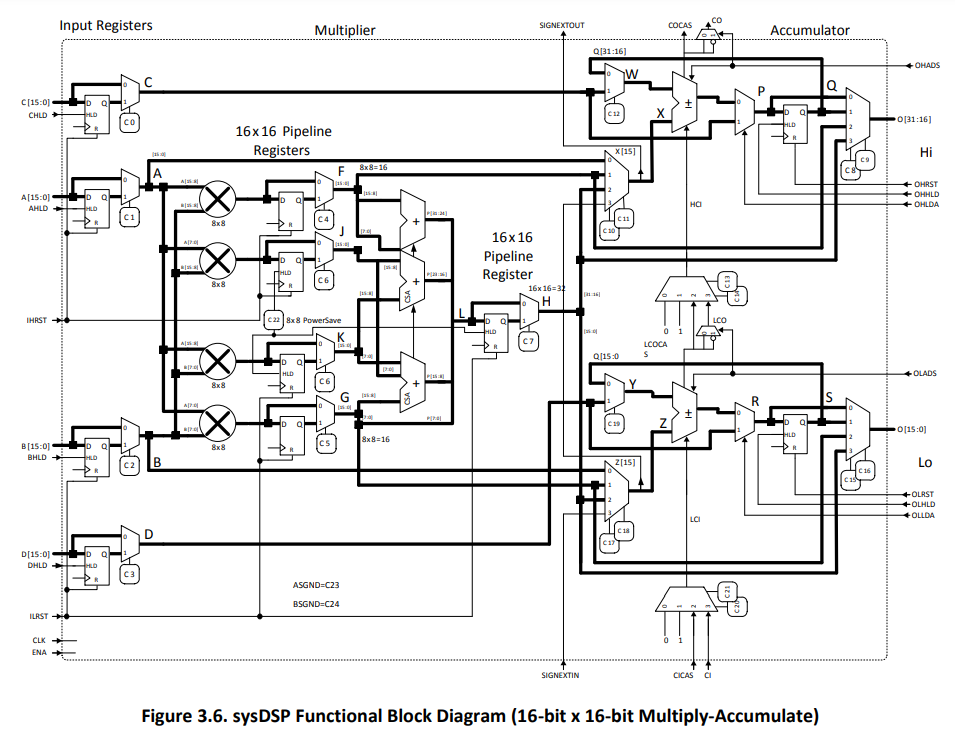
@ice40-io.png
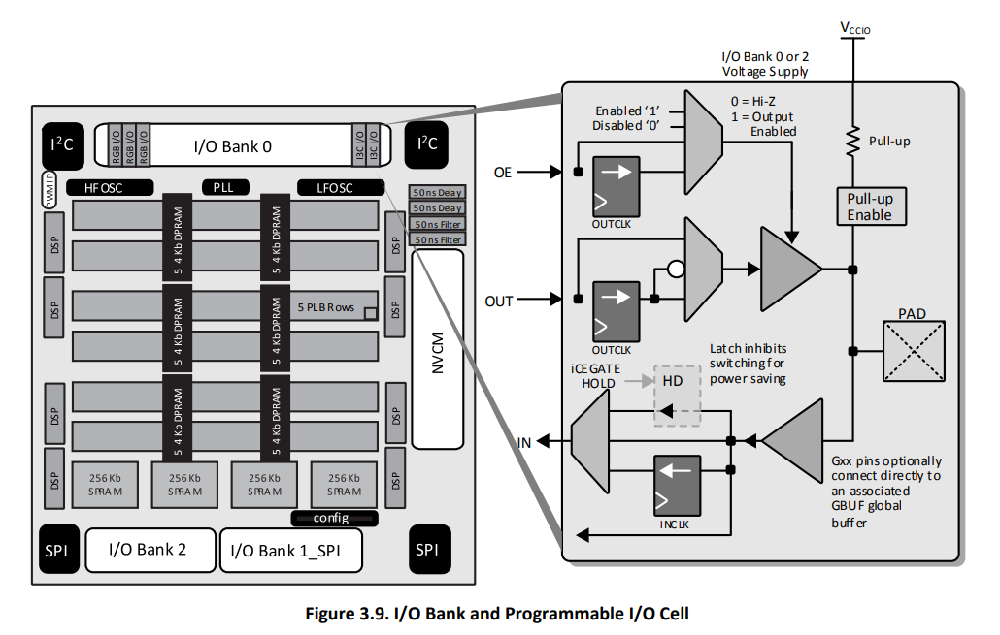
@ice40-dpram.png
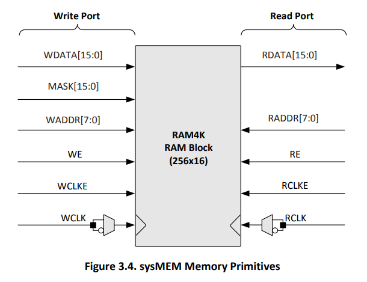
@ice40-spram.png
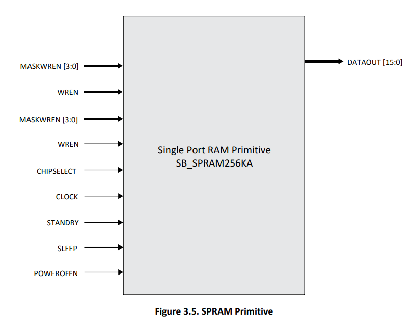
Programming the pico-ice
════════════════════════
• pico-sdk
• pico-ice-sdk
• Transfer via Flash drive + UF2
• I/O over one or more
virtual serial devices
UF2
═══
• UF2 = USB Flashing Format
• Created by Microsoft for MakeCode
• 512 Blocks to align with FAT Flash drive blocks
• Whole blocks arrive or not
• Each block has:
- magic numbers at the beginning and at the end
- address where the data should be flashed
- up to 476 bytes of data
µEforth
═══════
• Indirect-threaded Forth
• Written in C
• Extensive use of X-Macros
• Ports to:
- ESP32 (Known as ESP32forth)
- Linux/Posix
- Windows
- Web (via Asm.js)
- pico-ice?
X-MACROS
════════
• Use the C Preprocessor
• Lists of data to build code
• Make the caller a parameter
#define PRIMITIVE_LIST \
X("+", ADD, tos += *sp; --sp) \
Y(DROP, tos = *sp; --sp) \
Y(SWAP, w = tos; tos = *sp; *sp = w) \
Y(AND, tos = tos & *sp; --sp) \
Y(OR, tos = tos | *sp; --sp) \
enum {
#define X(sname, name, code) OP_ ## name,
PRIMITIVE_LIST
#undef X
};
Porting µEforth
═══════════════
• git submodules for SDKs
• Add CMake build invoked by Make
• Leave out fault handling to start
• New builtins.h + main.cpp
• And... it didn't run...
Debugging
═════════
• Confirmed basic IO samples work
• Added a "sim" variant like ESP32
• Found failures in the startup before IO ready
• And... it came up!
Bindings
════════
• memory support
• yield + ms-ticks support
• general posix files
• ice
- ice_cram_*
- ice_flash_*
- ice_fpga_*
- ice_led_*
- ice_spi_*
- ice_sram_*
• pico
- adc_*
- TODO: MORE!
Making it Faster
════════════════
• Shallow submodules
• Init only the needed modules
• Build only your target!
• cmake -G Ninja
Publishing
══════════
• Some refactoring of documentation
• For now don't publish by default
• Beta only for now
What's Next?
════════════
• Expose more USB bindings
• Expose more hardware bindings
• Add BLOCKs + use FPGA Flash for it
• Figure out how to build directly/faster?
- Arduino tools build instead?
• Synthesize for the FPGA in Forth!
icestorm/YoSYS
══════════════
• Community has reverse engineered
the iCE40 bitstream format!
• Built an open source verilog
• icepack capture fairly simple config layout
@ice40-plb.png
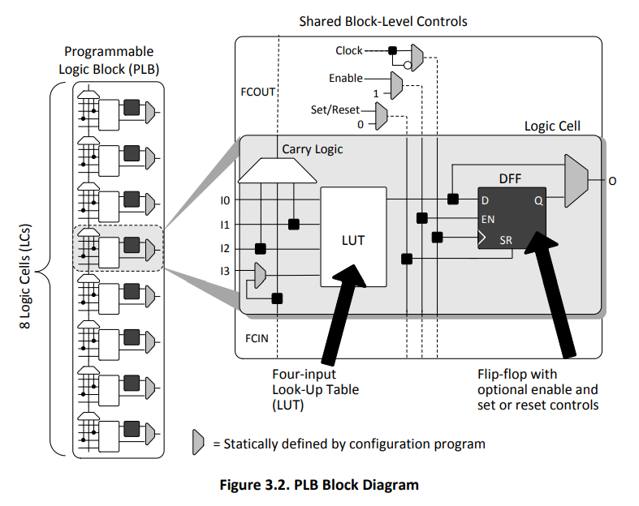
@ice40-viewer.png
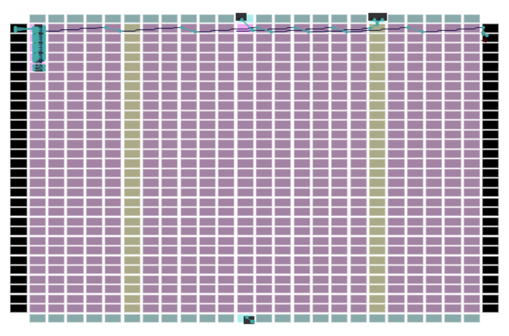
https://knielsen.github.io/ice40_viewer/ice40_viewer.html
iCE40 Format
════════════
• icepack capture fairly simple config layout:
if (right_half)
cram_x = bank_xoff + column_width - 1 - bit_x;
else
cram_x = bank_xoff + bit_x;
if (top_half)
cram_y = bank_yoff + (15 - bit_y);
else
cram_y = bank_yoff + bit_y;
.logic_tile_bitmap
Nobrrrr-rrrrrrbbbbbb-bbbbbbbbbbbbbbbllllllllllbbb--bbb
--orrrr-rrrrrrbbbbbb-bbbbbbbbbbbbbbbllllllllllbbbbCbbb
bbbrrrr-rrrrrrbbbbbb-bbbbbbbbbbbbbbbllllllllllbbb-bbbb
bbbrrrr-rrrrrrbbbbbb-bbbbbbbbbbbbbbbllllllllllbbb--bbb
bbbrrrr-rrrrrrbbbbbb-bbbbbbbbbbbbbbbllllllllllbbb-bbbb
bborrrr-rrrrrrbbbbbb-bbbbbbbbbbbbbbbllllllllllbbb--bbb
bbbrrrr-rrrrrrbbbbbb-bbbbbbbbbbbbbbbllllllllllbbb-bbbb
bborrrr-rrrrrrbbbbbb-bbbbbbbbbbbbbbbllllllllllbbb--bbb
bbbrrrr-rrrrrrbbbbbb-bbbbbbbbbbbbbbbllllllllllbbb-bbbb
bborrrr-rrrrrrbbbbbb-bbbbbbbbbbbbbbbllllllllllbbb--bbb
bbbrrrr-rrrrrrbbbbbb-bbbbbbbbbbbbbbbllllllllllbbb-bbbb
bborrrr-rrrrrrbbbbbb-bbbbbbbbbbbbbbbllllllllllbbb--bbb
bbbrrrr-rrrrrrbbbbbb-bbbbbbbbbbbbbbbllllllllllbbb-bbbb
bborrrr-rrrrrrbbbbbb-bbbbbbbbbbbbbbbllllllllllbbb--bbb
bbbrrrr-rrrrrrbbbbbb-bbbbbbbbbbbbbbbllllllllllbbb-bbbb
bborrrr-rrrrrrbbbbbb-bbbbbbbbbbbbbbbllllllllllbbb--bbb
- ... unknown bit
r ... routing
b ... buffer
l ... logic bits
o ... ColBufCtrl
C ... CarryInSet
N ... NegClk
@ice40-spans.png
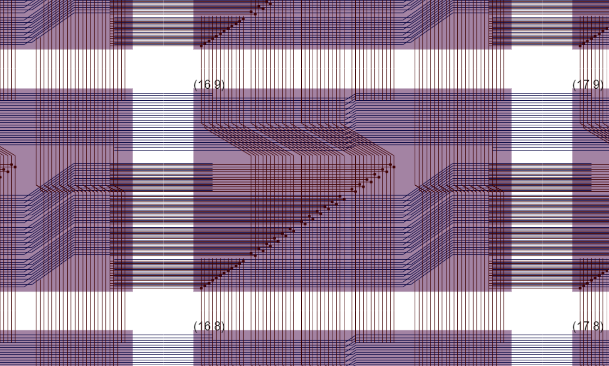
Plan for Synthesis
══════════════════
• Keep an allocation map for LUTs + Routes
• Reserve LUTs + routes greedily,
provide manual words to move allocation point
• Group signal in link list "bus" value
BUS ( bool-wire bus -- bus )
UNBUS ( bus -- bool-wire bus )
2LUT ( a b T -- v )
AT ( x y -- )
: AND ( a b -- v ) $8 2LUT ;
: OR ( a b -- v ) $E 2LUT ;
: XOR ( a b -- v ) $9 2LUT ;
: HA ( a b -- s c ) 2DUP AND >R XOR R> ;
: FA ( a b c -- s c ) HA >R HA R> OR ;
: ADDER ( cin a b n -- s cout )
NEWBUS
SWAP 0 DO
>R UNBUS >R SWAP UNBUS >R FA
SWAP R> SWAP R> SWAP R> BUS
LOOP
NIP NIP SWAP
;
1 IN PIN go
1 OUT PIN result
8 BIT REGISTER counter
go counter counter ADDER ON-CLOCK counter
counter UNBUS DROP ALWAYS result
DEMO
QUESTIONS❓
🙏
Thank you!